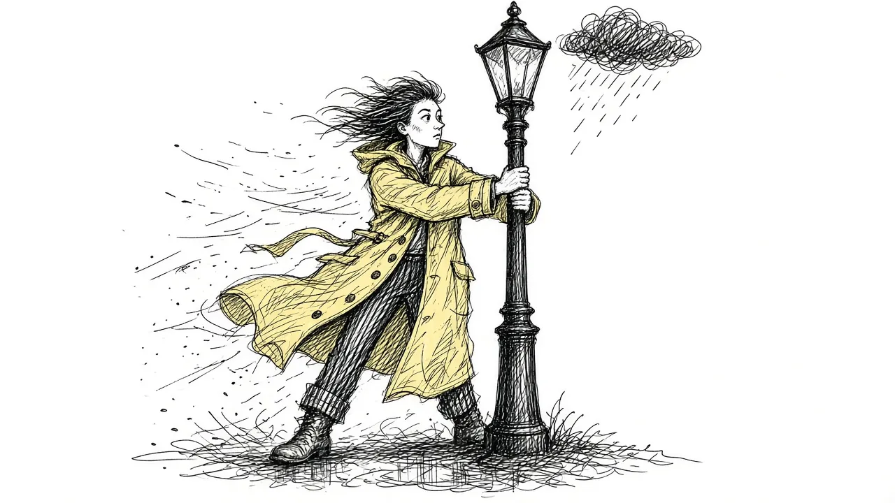
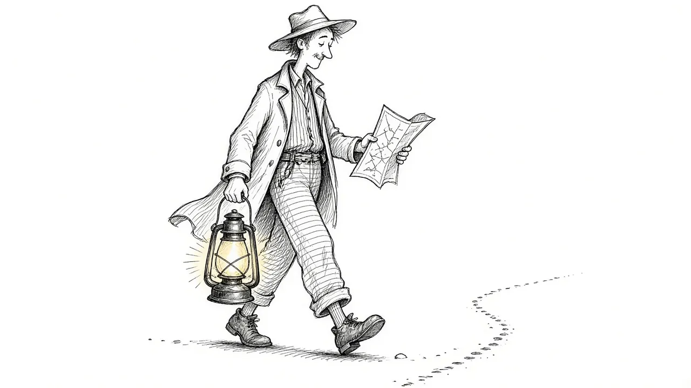
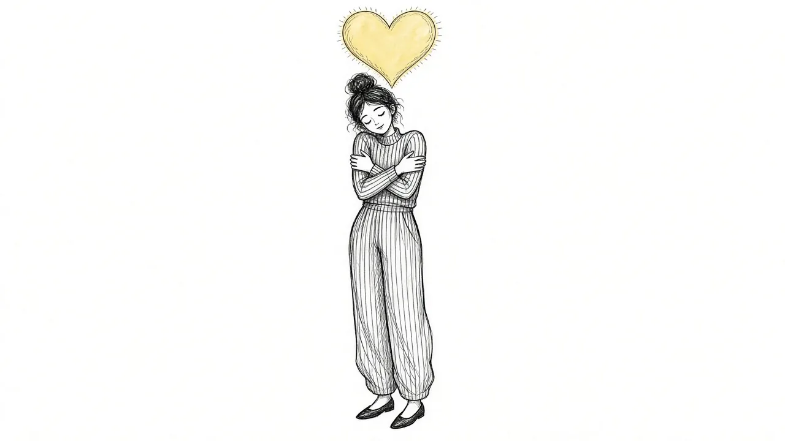

When Grief Feels Overwhelming: Ways Through the Storm

Some days grief feels like a storm that will not stop. You cannot think straight. You cannot stop crying, or you cannot cry at all. Your chest is tight. Simple tasks feel impossible. It may seem as though you are drowning and there is no shore in sight.
If grief feels overwhelming right now, please know this: what you are feeling is a natural response to a profound loss. It does not mean you are broken or that it will always feel this way. This guide offers ways to get through the hardest moments, steady yourself during the storm, and find support when you need it.
If you are feeling unsafe or having thoughts of ending your life, please reach out now. In the United States, you can call or text 988 to reach the Suicide and Crisis Lifeline at any time.
What overwhelming grief can feel like
Overwhelming grief can show up in the body, mind, and emotions. You might notice:
- Intense waves of sadness, longing, or panic.
- Physical symptoms, like chest pain, shaking, nausea, or exhaustion.
- Racing thoughts or being unable to focus.
- Numbness, as though you are watching life from a distance.
- Feeling out of control, as though the grief has taken over.
- Difficulty with basic tasks, like eating, sleeping, or getting dressed.
These experiences can be frightening. Understanding that they are common reactions to grief can make them feel a little less alarming. Our guide to grief symptoms explains the many ways grief can show up.
The storm feels endless while you are in it. But storms do pass, even when you cannot see how.
In the moment: getting through a wave
When a wave of grief crashes over you, it can help to have a few simple tools ready.
Breathe slowly
Try breathing in through your nose for a slow count of four, then out through your mouth for a slow count of six. Longer exhales can help calm your nervous system. Repeat a few times.
Ground yourself
Notice your surroundings. Name five things you can see, four things you can hear, three things you can touch, two things you can smell, and one thing you can taste. This can help bring your mind back to the present moment.
Feel your body
Place your feet firmly on the floor. Press your hands together or hold something solid. Notice the weight of your body in the chair. This physical contact can be steadying.
Let it come
Instead of fighting the wave, let it move through you. Cry if you need to. Remind yourself, "This is a wave. It will pass." Our guide to grief waves explains how waves rise and fall.
Reach for comfort
Wrap yourself in a blanket. Hold a pet. Sip something warm. Small comforts can help your body feel safer.
Getting through the day
When grief feels overwhelming for days or weeks, it can help to focus on very small steps.
- Lower expectations. You do not need to be productive. Focus on basics.
- Eat something. Even a few bites at regular times can help stabilize your energy.
- Drink water. Dehydration can make everything feel worse.
- Move a little. A short walk or gentle stretch can ease tension.
- Step outside. Even a few minutes of fresh air and daylight can help.
- Rest. Lie down if you need to, even if you cannot sleep.
- Reach out. Send a message to one person, even just "Today is hard."
Some people find it helpful to write a short list each morning of just one or two things to do that day. Crossing even one off can feel like a small victory.
When nights are the hardest
Many grieving people find that overwhelm peaks at night. The house is quiet, distractions are gone, and thoughts grow louder.
Some things that may help:
- Keep a gentle bedtime routine.
- Avoid screens right before bed.
- Keep a notebook nearby to write down racing thoughts.
- Listen to calming audio, such as soft music or an audiobook.
- If you cannot sleep, get up and do something quiet for a while, then try again.
If sleep problems continue for weeks, talk with your doctor.
Making space for grief on purpose
It may sound counterintuitive, but setting aside time to grieve on purpose can help reduce overwhelm. When grief has a regular place to go, it may feel less like it is ambushing you all day.
You might choose a time each day, maybe 15 or 20 minutes, to look at photos, write a letter, or simply sit with your feelings. When the time is up, gently shift to something else. Our guide to beyond fighting grief explains why leaning in can help.
Asking for help
When grief feels overwhelming, you do not have to carry it alone. People often want to help but do not know how. It can help to be specific:
- "Could you come over tonight? I do not want to be alone."
- "Could you pick up groceries for me this week?"
- "Could you call me on Sunday? Weekends are hard."
- "Could you help me with these phone calls?"
If you do not have friends or family nearby, consider reaching out to a support group, a faith community, or a grief counselor. Our guide to grief support options explores what is available.
When overwhelm does not ease
For many people, overwhelming grief comes and goes, and slowly becomes less frequent over time. But sometimes, grief stays intense and disabling for a long time. If you notice:
- Grief that makes daily functioning very hard for many months.
- Feeling hopeless most of the time.
- Being unable to care for yourself or others.
- Using alcohol or substances to cope.
- Thoughts of not wanting to live.
it may be time to seek professional support. Our guide to prolonged grief explains when grief may need more help, and our guide to grief alongside depression and anxiety explores the overlap.
Being gentle with yourself
When grief overwhelms you, it is easy to feel ashamed or frustrated with yourself. You might think you should be coping better, or that others are handling it more easily.
Try to speak to yourself as you would to a friend who was going through this. You might say, "This is so hard. Of course I am overwhelmed. I loved them so much." Our guide to self compassion in grief offers more ideas.
A short list for the hardest moments
You might keep a list like this on your phone or by your bed for when grief feels like too much:
- Breathe in for four, out for six.
- Feet on the floor. Hands on something solid.
- This is a wave. It will pass.
- Drink some water.
- Text one person.
- If I feel unsafe, call or text 988.
Having a plan ready can make the hardest moments feel slightly less chaotic.
The storm will change
Right now, it may feel as though the overwhelm will never end. But for most people, grief does change over time. The waves become less frequent. The storm softens. Moments of peace begin to appear, even alongside the pain.
You do not have to believe that yet. You only have to get through this moment, and then the next one. And you do not have to do it alone.
This article is for general information and support. It is not medical or mental health advice. If grief has become unbearable or you are thinking about harming yourself, call or text 988 right now.
Related reading
Acceptance and Remembrance: Two Ideas That Shape Healthy Grief
How acceptance and remembrance work together to help people carry grief while staying connected to the person they lost.

Coping With Grief: A Practical Guide
Practical, everyday ways to cope with grief, from the first days through the months and years that follow.

Self-Compassion in Grief
Grieving people are often harsh with themselves. How self-compassion can ease guilt and help you carry loss.